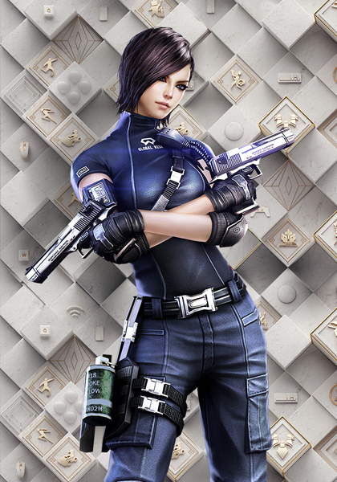

|  |
The combat mode can be said to be quite a test of personal strength, the evaluation of a knife fighting player is not good, it depends on whether he can ride the dust in the knife fighting map, as we all know, most Gunfighters now have heroic weapons, sword fighting masters, do you dare to have a try?
Dragon whistling
This weapon is very strong, playing this weapon needs to be stable, do not attack rashly, otherwise it is very easy to have an accident, a very good weapon, must cherish!
The end of the ruling
This weapon is particularly interesting, the tap is strong, the punch is for fun, this weapon has unbeatable skills in bountiful and challenge mode, it works very well
Golden cudgel
The staff is an ancient artifact
It's a very difficult weapon to use. It is! It is difficult to control the blade without a point of play. The speed of light blows is slow, and the time of attack is difficult to grasp after heavy blows
The secret silver warhammer
This weapon can fight against handheld hero level close combat players, the second stage of the attack fault tolerance rate is very high, the attack speed is not slow, feel is very smooth, but do not know why has not been famous
Bellow chicken
If nothing else, the mental assault would be enough to put it at the top of the list, and to be honest, it's a real fight |
|
|